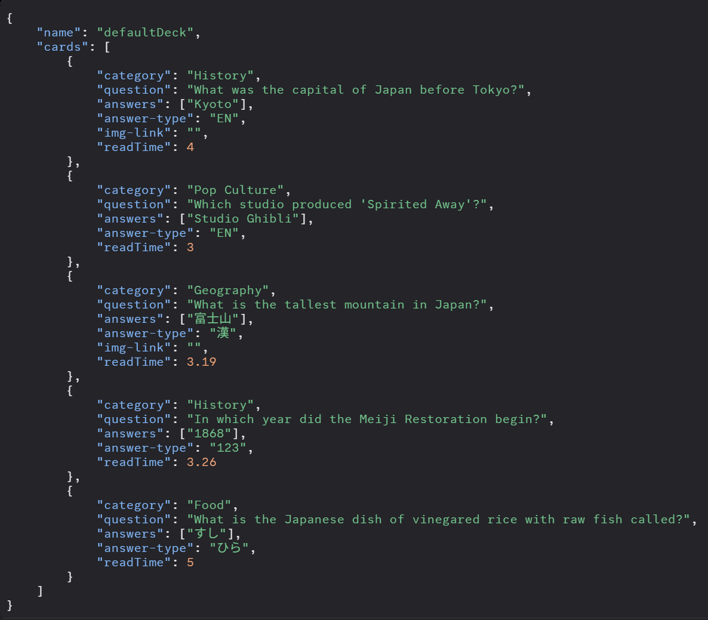

Thanks for asking!
Explaining the deck format:

"name": name of your deck. name it whatever!
"category": the category of the question. can be anything! just dont make it too long or it fucks the CSS
"question": the question! It can be pretty long.
"answers": an array that lists all the possible answers. if your answer is in english, ("answer-type: EN") the server allows a few typos to be made for correct answers.
"answer-type": the japan bowl answer type, displayed at the top right of the question screen. tells you how to answer the question. the allowed types are as follows:
漢 JP EN ABC ひら カナ 123
It must be exact or your deck will crash matches :(
A server patch is in the works to prevent decks without this being uploaded.
"read-Time" how long a proctor would take to read the question. Stopwatch yourself reading the question like a proctor.
If anyone answers in this threshold it is equivalent to an early buzz in like actual toss-up; the same penaltys apply during a match.
"img-link" *(Optional)*: the link to the image you want to display for the image.
Make sure to copy the image link exactly and paste. I reccomend
catbox.moe for better and shorter links!
If you're ready, head on to the deck upload and start uploading!
Or take your time making a deck first. That's ok too!